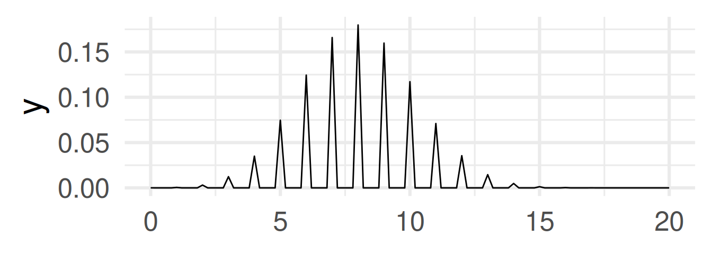

W#13: Random Variables, Probability Distributions, Central Limit Theorem
Jan Lorenz
Distribution Functions
General systematic of functions for distributions in R
In R we usually have 4 function for each distribution: The d, p, q, and r version. For the binomial distribution:
dbinom the density function (more on the name later)
pbinom distribution function
qbinom the quantile function, and
rbinom random number generator.
Probability mass function d…
The mass function (or density function, more on this later) dbinom
k <-0:10tibble(k, probability =dbinom(k, size =10, prob =0.5)) |>ggplot(aes(k, probability)) +geom_col() +theme_minimal(base_size =24)
Gives the probability for the number \(x\): \(\text{Pr}(X = x)\) or \(f_X(x)\).
Distribution function p…
The distribution function, or cumulative probability function pbinom
k <-0:10tibble(k, probability =pbinom(k, size =10, prob =0.5)) |>ggplot(aes(k, probability)) +geom_col() +theme_minimal(base_size =24)
Gives the probability that the random variable is less or equal to \(x\): \(\text{Pr}(X \leq x)\).
Quantile function q…
The quantile function, qbinom with argument \(p\) representing the fraction of lowest values of \(X\) among all values for which we want the \(k\) value for.
Rows: 787 Columns: 2
── Column specification ────────────────────────────────────────────────────────
Delimiter: ","
dbl (2): Estimate, id
ℹ Use `spec()` to retrieve the full column specification for this data.
ℹ Specify the column types or set `show_col_types = FALSE` to quiet this message.
Rows: 1226 Columns: 3
── Column specification ────────────────────────────────────────────────────────
Delimiter: ","
chr (1): Date Time
dbl (2): Losnummer, Schätzung
ℹ Use `spec()` to retrieve the full column specification for this data.
ℹ Specify the column types or set `show_col_types = FALSE` to quiet this message.
owid <-read_csv("data/owid-covid-data.csv")
Rows: 224711 Columns: 67
── Column specification ────────────────────────────────────────────────────────
Delimiter: ","
chr (4): iso_code, continent, location, tests_units
dbl (62): total_cases, new_cases, new_cases_smoothed, total_deaths, new_dea...
date (1): date
ℹ Use `spec()` to retrieve the full column specification for this data.
ℹ Specify the column types or set `show_col_types = FALSE` to quiet this message.
owid_inds <- owid |># Filter for one day and remove rows where continent is NA# These are rows with data for continents or world regionsfilter(date =="2022-10-01", !is.na(continent)) |># These are the "Other" variablesselect(iso_code, continent, location, population:human_development_index) |># We remove the ones with many NA'sselect(-handwashing_facilities, -male_smokers, - female_smokers, -extreme_poverty) |>drop_na()ess_raw <-read_csv("data/ESS-Data-Wizard-subset-2022-09-17.csv",col_types =cols(name =col_character(),essround =col_double(),edition =col_double(),proddate =col_character(),idno =col_double(),cntry =col_character(),dweight =col_double(),pspwght =col_double(),pweight =col_double(),euftf =col_double(),gincdif =col_double(),lrscale =col_double(),polintr =col_double(),stflife =col_double(),trstplc =col_double(),vote =col_double(),imueclt =col_double(),atchctr =col_double(),atcherp =col_double(),crmvct =col_double(),pray =col_double(),rlgdgr =col_double(),gndr =col_double(),age =col_double() ))ess <- ess_raw |>filter(essround ==9) |>mutate(atchctr = atchctr |>na_if(77) |>na_if(88) |>na_if(99),atcherp = atcherp |>na_if(77) |>na_if(88) |>na_if(99),euftf = euftf |>na_if(77) |>na_if(88) |>na_if(99),lrscale = lrscale |>na_if(77) |>na_if(88) |>na_if(99),imueclt = imueclt |>na_if(77) |>na_if(88) |>na_if(99))
Discrete random variable
Atomic event: 20 (unfair) coin flips with HEADS probability 40%. Random Variable: Number of HEADS.
Atomic event: Point on a ruler of 1 meter length. Each point is equally likely. Random Variable: The marking on the ruler in meters (number from 0 to 1).
Warning in fun(x_trans, size = 20, prob = 0.4): non-integer x = 0.200000
Warning in fun(x_trans, size = 20, prob = 0.4): non-integer x = 0.400000
Warning in fun(x_trans, size = 20, prob = 0.4): non-integer x = 0.600000
Warning in fun(x_trans, size = 20, prob = 0.4): non-integer x = 0.800000
Warning in fun(x_trans, size = 20, prob = 0.4): non-integer x = 1.200000
Warning in fun(x_trans, size = 20, prob = 0.4): non-integer x = 1.400000
Warning in fun(x_trans, size = 20, prob = 0.4): non-integer x = 1.600000
Warning in fun(x_trans, size = 20, prob = 0.4): non-integer x = 1.800000
Warning in fun(x_trans, size = 20, prob = 0.4): non-integer x = 2.200000
Warning in fun(x_trans, size = 20, prob = 0.4): non-integer x = 2.400000
Warning in fun(x_trans, size = 20, prob = 0.4): non-integer x = 2.600000
Warning in fun(x_trans, size = 20, prob = 0.4): non-integer x = 2.800000
Warning in fun(x_trans, size = 20, prob = 0.4): non-integer x = 3.200000
Warning in fun(x_trans, size = 20, prob = 0.4): non-integer x = 3.400000
Warning in fun(x_trans, size = 20, prob = 0.4): non-integer x = 3.600000
Warning in fun(x_trans, size = 20, prob = 0.4): non-integer x = 3.800000
Warning in fun(x_trans, size = 20, prob = 0.4): non-integer x = 4.200000
Warning in fun(x_trans, size = 20, prob = 0.4): non-integer x = 4.400000
Warning in fun(x_trans, size = 20, prob = 0.4): non-integer x = 4.600000
Warning in fun(x_trans, size = 20, prob = 0.4): non-integer x = 4.800000
Warning in fun(x_trans, size = 20, prob = 0.4): non-integer x = 5.200000
Warning in fun(x_trans, size = 20, prob = 0.4): non-integer x = 5.400000
Warning in fun(x_trans, size = 20, prob = 0.4): non-integer x = 5.600000
Warning in fun(x_trans, size = 20, prob = 0.4): non-integer x = 5.800000
Warning in fun(x_trans, size = 20, prob = 0.4): non-integer x = 6.200000
Warning in fun(x_trans, size = 20, prob = 0.4): non-integer x = 6.400000
Warning in fun(x_trans, size = 20, prob = 0.4): non-integer x = 6.600000
Warning in fun(x_trans, size = 20, prob = 0.4): non-integer x = 6.800000
Warning in fun(x_trans, size = 20, prob = 0.4): non-integer x = 7.200000
Warning in fun(x_trans, size = 20, prob = 0.4): non-integer x = 7.400000
Warning in fun(x_trans, size = 20, prob = 0.4): non-integer x = 7.600000
Warning in fun(x_trans, size = 20, prob = 0.4): non-integer x = 7.800000
Warning in fun(x_trans, size = 20, prob = 0.4): non-integer x = 8.200000
Warning in fun(x_trans, size = 20, prob = 0.4): non-integer x = 8.400000
Warning in fun(x_trans, size = 20, prob = 0.4): non-integer x = 8.600000
Warning in fun(x_trans, size = 20, prob = 0.4): non-integer x = 8.800000
Warning in fun(x_trans, size = 20, prob = 0.4): non-integer x = 9.200000
Warning in fun(x_trans, size = 20, prob = 0.4): non-integer x = 9.400000
Warning in fun(x_trans, size = 20, prob = 0.4): non-integer x = 9.600000
Warning in fun(x_trans, size = 20, prob = 0.4): non-integer x = 9.800000
Warning in fun(x_trans, size = 20, prob = 0.4): non-integer x = 10.200000
Warning in fun(x_trans, size = 20, prob = 0.4): non-integer x = 10.400000
Warning in fun(x_trans, size = 20, prob = 0.4): non-integer x = 10.600000
Warning in fun(x_trans, size = 20, prob = 0.4): non-integer x = 10.800000
Warning in fun(x_trans, size = 20, prob = 0.4): non-integer x = 11.200000
Warning in fun(x_trans, size = 20, prob = 0.4): non-integer x = 11.400000
Warning in fun(x_trans, size = 20, prob = 0.4): non-integer x = 11.600000
Warning in fun(x_trans, size = 20, prob = 0.4): non-integer x = 11.800000
Warning in fun(x_trans, size = 20, prob = 0.4): non-integer x = 12.200000
Warning in fun(x_trans, size = 20, prob = 0.4): non-integer x = 12.400000
Warning in fun(x_trans, size = 20, prob = 0.4): non-integer x = 12.600000
Warning in fun(x_trans, size = 20, prob = 0.4): non-integer x = 12.800000
Warning in fun(x_trans, size = 20, prob = 0.4): non-integer x = 13.200000
Warning in fun(x_trans, size = 20, prob = 0.4): non-integer x = 13.400000
Warning in fun(x_trans, size = 20, prob = 0.4): non-integer x = 13.600000
Warning in fun(x_trans, size = 20, prob = 0.4): non-integer x = 13.800000
Warning in fun(x_trans, size = 20, prob = 0.4): non-integer x = 14.200000
Warning in fun(x_trans, size = 20, prob = 0.4): non-integer x = 14.400000
Warning in fun(x_trans, size = 20, prob = 0.4): non-integer x = 14.600000
Warning in fun(x_trans, size = 20, prob = 0.4): non-integer x = 14.800000
Warning in fun(x_trans, size = 20, prob = 0.4): non-integer x = 15.200000
Warning in fun(x_trans, size = 20, prob = 0.4): non-integer x = 15.400000
Warning in fun(x_trans, size = 20, prob = 0.4): non-integer x = 15.600000
Warning in fun(x_trans, size = 20, prob = 0.4): non-integer x = 15.800000
Warning in fun(x_trans, size = 20, prob = 0.4): non-integer x = 16.200000
Warning in fun(x_trans, size = 20, prob = 0.4): non-integer x = 16.400000
Warning in fun(x_trans, size = 20, prob = 0.4): non-integer x = 16.600000
Warning in fun(x_trans, size = 20, prob = 0.4): non-integer x = 16.800000
Warning in fun(x_trans, size = 20, prob = 0.4): non-integer x = 17.200000
Warning in fun(x_trans, size = 20, prob = 0.4): non-integer x = 17.400000
Warning in fun(x_trans, size = 20, prob = 0.4): non-integer x = 17.600000
Warning in fun(x_trans, size = 20, prob = 0.4): non-integer x = 17.800000
Warning in fun(x_trans, size = 20, prob = 0.4): non-integer x = 18.200000
Warning in fun(x_trans, size = 20, prob = 0.4): non-integer x = 18.400000
Warning in fun(x_trans, size = 20, prob = 0.4): non-integer x = 18.600000
Warning in fun(x_trans, size = 20, prob = 0.4): non-integer x = 18.800000
Warning in fun(x_trans, size = 20, prob = 0.4): non-integer x = 19.200000
Warning in fun(x_trans, size = 20, prob = 0.4): non-integer x = 19.400000
Warning in fun(x_trans, size = 20, prob = 0.4): non-integer x = 19.600000
Warning in fun(x_trans, size = 20, prob = 0.4): non-integer x = 19.800000

Continuous random variable
Atomic event: Point on a ruler of 1 meter length. Each point is equally likely. Random Variable: The marking on the ruler in meters (number from 0 to 1).
The distribution function of a sample of 50 random numbers from a normal distribution.
Empirical and theoretical distribution function
normal <-rnorm(50) normal_cdf <-tibble(x = normal) %>%arrange(x) %>%# We sort the data by sizemutate(cdf = (1:length(normal))/length(normal)) # cumulative probabilitiesnormal_cdf |>ggplot(aes(x, y = cdf)) +geom_step() +geom_function(fun = pnorm, color ="red") +xlim(c(-3,3)) +theme_minimal(base_size =24)
Empirical pmf approached with a histogram with small binwidth.
This type of pmf does not show the characteristics of the distribution well.
::::
Approaching a solution
The theoretical distribution is approached better with
larger samples and
larger (but not too large) binwidth
normal <-rnorm(5000) normal_cdf <-tibble(x = normal) %>%arrange(x) %>%# We sort the data by sizemutate(cdf = (1:length(normal))/length(normal)) # cumulative probabilitiesnormal_cdf |>ggplot(aes(x, y = cdf)) +geom_step() +geom_function(fun = pnorm, color ="red") +xlim(c(-4,4)) +theme_minimal(base_size =24)
\(\int_a^bf(x)dx\) is the probability that a value from the random variable \(X\) lies between \(a\) and \(b\): \(\text{Pr}(X \geq a \ \&\ X \leq b)\) or \(\text{Pr}(X \in [a,b])\)
The pdf is the analog of the pmf for continuous random variables.
Instead of the probability that \(X\) takes a specific value \(a\), we are interested in the probability that \(X\) takes a value in an interval \([a,b]\).
Distribution Functions in R
Identifiers for distributions: unif uniform distribution norm normal distribution lnorm lognormal distribution binom binomial distribution
Warning: Removed 4 rows containing non-finite outside the scale range
(`stat_bin()`).
Warning: Removed 4 rows containing non-finite outside the scale range
(`stat_density()`).
Warning: Removed 2 rows containing missing values or values outside the scale range
(`geom_bar()`).
Distribution parameters
As empirical samples of numbers also theoretical distributions have an expected value or mean and a variance (and a standard deviation). In theoretical distributions they often become (related to) parameters of the distribution.
The normal distribution has the parameters mean and sd
ggplot() +geom_function(fun =function(x) dnorm(x, mean =2, sd =1)) +geom_function(fun =function(x) dnorm(x, mean =-3, sd =3), color ="red") +geom_function(fun =function(x) dnorm(x, mean =7, sd =0.5), color ="blue") +geom_function(fun =function(x) dnorm(x, mean =-1, sd =6), color ="green") +xlim(-15,15) +theme_minimal(base_size =24)
Measures of samples
Here are some examples of mean and standard deviation:
More important than knowing many distribution is to learn how to extract the idea of the underlying probabilistic model.
Examples:
Binomial distribution as the number of successes in repeated Bernoulli trials.
Poisson distribution as the number of events in a given time interval.
Normal distribution as the sum of many independent random variables.
Lognormal distribution as the product of many independent random variables.
What does the underlying model of a normal distribution mean?
Central Limit Theorem
Why is the normal distribution so central in theory?
Because of the central limit theorem, which is a great mathematical insights.
Central Limit Theorem (colloquial version) The sum of many independent random variables (which can have various distributions) approaches the normal distribution (for ever larger sums and proper normalization).
\(Y = X_1 + X_2 + \dots + X_n \to \text{Normal distribution}\) for large \(n\)
This holds for \(X_i\) with any distributions (except with fat tails)!
The mean of the evolving normal distribution of \(Y\) is the sum of the expected values of the \(X_i\)
Warning: Removed 2 rows containing missing values or values outside the scale range
(`geom_bar()`).
Removed 2 rows containing missing values or values outside the scale range
(`geom_bar()`).
Removed 2 rows containing missing values or values outside the scale range
(`geom_bar()`).
Removed 2 rows containing missing values or values outside the scale range
(`geom_bar()`).
Sums of random variables important?
Why are sums of random variables important?
Sums of random variables are the theoretical foundation of linear models \(Y = \beta_0 + \beta_1X_1 + \dots + \beta_nX_n\)
They appear also in generalized linear models as for the logistic regression.
Products of Random Variables?
What when \(Y\) is the product of many positive-valued random variable?
\(Y = X_1 \cdot X_2 \cdot \dots \cdot X_n\)
Then
\(\log(Y) = \log(X_1) + \log(X_2) + \dots + \log(X_n) \to \text{Normal distribution}\) for large \(n\) (central limit theorem)
So, \(\log(Y)\) tends to become normally distributed.
Warning: Removed 106 rows containing non-finite outside the scale range
(`stat_bin()`).
Warning: Removed 221 rows containing non-finite outside the scale range
(`stat_bin()`).
Warning: Removed 2 rows containing missing values or values outside the scale range
(`geom_bar()`).
Removed 2 rows containing missing values or values outside the scale range
(`geom_bar()`).
Removed 2 rows containing missing values or values outside the scale range
(`geom_bar()`).
Removed 2 rows containing missing values or values outside the scale range
(`geom_bar()`).
Different distributions
Distributions “live” on different domains. This determines which values for random numbers are theoretically possible.
What is the domain of Binomially distributed random numbers? \(\{0, ..., n\}\)
What is the domain of Normally distributed random numbers? \((-\infty, +\infty\))
What is the domain of Lognormally distributed random numbers? \((0, +\infty\))
What is the domain of Uniformly distributed random numbers? \([0, 1]\)
Take away:
For many variables there are better or worse candidates for a theoretical distribution to assume.
Look at the empirical range and empircal distrbution of the variable
Think about the data generating process and how it may fit to a probability model